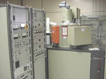

Level 1 - Antireflection Coating
A flat bare silicon surface is highly reflective, with more than 30% of incident sunlight being reflected at all wavelengths as shown (right). These reflection losses can be significantly reduced through the use of texturing of the silicon surface as described in the section on "texturing". However, texturing is only effective with certain orientations of silicon crystals (in the vicinity of (100) orientation). |
For wafers that are unsuitable for texturing or for some other reason require a flat surface, it is necessary to apply one or more antireflection coatings to reduce the surface reflection. A range of different dielectric materials can be used for forming antireflection coatings and can be applied using a range of different techniques including resistive heating vacuum deposition, chemical vapour deposition, screen printing, sputtering as shown below, electron beam deposition, spin-on coating and even spraying. Some of these techniques are expensive and therefore are not used in commercial production.
|  | The most commonly used techniques in commercial production include spraying, chemical vapour deposition (either atmospheric CVD or else plasma enhanced CVD), or screen printing. The most commonly used dielectric materials for forming the antireflection coating are silicon nitride and titanium dioxide. The former is normally deposited by plasma enhanced chemical vapour deposition (PECVD) or else atmospheric pressure chemical vapour deposition (APCVD), while the latter is normally applied by spraying, APCVD or screen printing. |
|
The 180 degree phase shift is achieved for a given wavelength l by making the thickness of the dielectric layer T = l /4 (where l is the wavelength the light has within the dielectric layer). The reflected light will therefore have a phase shift of half a wavelength (2T) and therefore destructively interfere with the light component reflected from the dielectric/air interface to reduce the total reflection. The other important factor is that the amplitude of these two reflected components that are 180 degrees out of phase with each other also need to be of similar magnitude to give lowest reflection. The magnitude of each of these components is determined by the refractive indices of the two materials at each respective interface. The refractive index of the dielectric layer is therefore chosen relative to that of the silicon material and air so as to minimise reflection. This necessitates the dielectric layer having a refractive index preferably within the range of 1.9-2.1.
It should be noted that the right thickness and refractive index for the dielectric layer can in fact lead to zero reflection for a given wavelength of light. Unfortunately, sunlight comprises a wide range of wavelengths of light. The effectiveness of the antireflection coating becomes progressively less effective the more the wavelength departs from its designed value. Antireflection coatings are therefore designed to give the best overall performance for the solar spectrum which means designing it to be most effective for green light. For this reason, cells will often look blue, simply because the resulting reflection is somewhat higher for the shorter wavelengths of the visible spectrum than the longer wavelengths. In comparison, many laboratory cells will use multiple layer antireflection coatings so as to be able to reduce the reflection to zero for multiple different wavelengths of light from within the solar spectrum. This gives a black/dark-green appearance. In general, the economics do not favour this approach with commercial cells, with single layer antireflection coatings being used on almost all commercially manufactured solar cells.
In principle, the antireflection coating can be applied at just about any point in the processing sequence. Many years ago, it was considered preferable to apply the antireflection coating at the end of processing so as to avoid contamination of the silicon wafer by the antireflection coating during high temperature processing and to avoid the necessity for the antireflection coating to withstand the various processing conditions. The problem however with this approach is that the metal is then coated by the antireflection coating, unless some form of masking is used during the antireflection coating deposition. Coated metal necessitates subsequent removal of the AR coating from the metal to facilitate contacting/soldering.
More recently, techniques have been developed that facilitate the application of the antireflection coating reasonably early during the processing sequence. This is now feasible since the chosen AR coatings have been shown to be able to withstand all the subsequent processing conditions, while simultaneously not contaminating the silicon wafer. |
Just as importantly, new screen printing
paste formulations shown to the right have been developed to enable the screen-printed
metal to be fired through the antireflection coating layer and still make ohmic
contact onto the underlying silicon. More details will be provided on this
in the following section.
Perhaps the most important development in screen printed solar cell technology in the last 20 years has been the formulation of new metal pastes and processing conditions that facilitate the deposition of the antireflection coating prior to screen printing while still facilitating subsequent metal contact formation. The critical issue in achieving this compatibility has been the necessity to fire the screen printed metal paste through the antireflection coating so as to provide good ohmic contact to the underlying diffused n-type layer of silicon without damaging the nearby junction. The obvious immediate benefit is that such an approach will allow all the benefits of reduced surface reflection offered by the antireflection coating but without the problems associated with the deposition of the AR coating onto the metal surface. There are, however, significant other benefits.
When screen printed solar cell technology was first developed approximately 30 years ago, it was necessary for the diffused n-type silicon to be both heavily doped to facilitate good ohmic contact to the metal and also reasonably thick so as to prevent the metal from penetrating to the junction region during its subsequent firing. For decades, screen printed solar cells therefore had deep junctions with heavily phosphorus diffused emitters, primarily for compatibility with screen printed metal pastes that inevitably penetrate a certain distance into the silicon when fired at elevated temperatures to achieve the required metallic properties.
The deposition of an antireflection coating (as shown to the right) prior to metal paste deposition makes it possible to minimise the penetration distance of the metal paste into the diffused emitter. This is beneficial for two reasons, firstly, to facilitate the use of shallower junctions and secondly to enable the silicon/metal interface to reside closer to the silicon surface following firing at elevated temperature. |
The latter is important as the phosphorus concentration is higher near the surface and therefore able to produce lower contact resistance. The importance of reducing the depth of the junction relates to the fact that electron hole pairs generated right at the surface of the silicon have further to travel to the junction to be collected if the junction is deeper. This is a problem for many screen printed solar cells for a couple of reasons. Firstly, the diffusion lengths in the emitter are very short because of the damage and the effects of the heavy phosphorus doping. Secondly, the distance for the holes to travel to the junction is further, therefore allowing more to recombined before being collected. Thirdly, because the surface passivation for screen printed solar cells is generally poor, it becomes energetically favourable for many of the generated carriers (holes) to go to the surface to recombine rather than travelling to the junction to be collected.
The use of screen printed metal contacts fired through an antireflection coating not only requires the right chemical formulation for the metal paste (to facilitate its penetration through the dielectric layer), but also the right properties for the antireflection coating layer. For the latter, the deposition conditions will have significant impact on the hardness of the layer and also its thickness, both of which will have significant impact on the ability of the metal to penetrate through the antireflection coating and into the silicon surface. If, for instance the antireflection coating is too thick or too hard, the metal will not penetrate far enough through the AR coating to make contact with the silicon. If on the other hand the AR coating is too thin or too soft, the metal will then penetrate too far into the silicon and therefore damage the junction and hence the solar cell performance. The deposition conditions for the AR coating are therefore of significant importance, particularly if a shallow emitter is being used. These AR coating deposition conditions need to be optimised in conjunction with the firing conditions for the screen printed silver metal contact since clearly both sets of conditions in combination determine the penetration depth of the metal into the silicon relative to the junction location.
The two most common antireflection coating types used in conjunction with fire through contacts are titanium dioxide and silicon nitride. Titanium dioxide, although easily and cheaply applied by spraying, will normally be deposited by atmospheric pressure chemical vapour deposition (APCVD) for fire-through contacts so as to give the required reproducibility and spatially uniform properties. This is normally done using a belt furnace for high throughput as shown above. When the belt carries the wafers into the chemical reaction chamber which is normally heated to a temperature in the vicinity of 150-200 degrees C, the gases containing the titanium are fed into the chamber, react/decompose and facilitate the formation of the titanium dioxide layer on the wafer surface. |
If the deposition temperature is too high, the resulting layer is harder/tougher than desirable for facilitating the formation of the metal fire-through contacts. If the temperature is too low, the right chemical formulation for producing the titanium dioxide is not achieved and the resulting layer is not only too soft, but lacks the required optical and electrical properties for subsequent processing and solar cell operation.
The other type of commonly used antireflection coating for fire-through contacts is silicon nitride. This can be deposited by either low pressure CVD (LPCVD) or plasma enhanced CVD (PECVD). The advantage of the latter is that atomic hydrogen is generated in the reaction chamber and therefore incorporated into the deposited silicon nitride layer. This can be particularly beneficial with multicrystalline cells as the hydrogen is able to penetrate the grain boundaries during any subsequent high temperature processing. This atomic hydrogen is very reactive and able to tie up (passivate) dangling bonds that inevitably exist at any interruptions/discontinuities in the crystalline silicon lattice. Passivating these dangling bonds essentially means they no longer act as recombination sites, therefore improving the overall silicon wafer quality, particularly in the grain boundary regions or where defects are present.